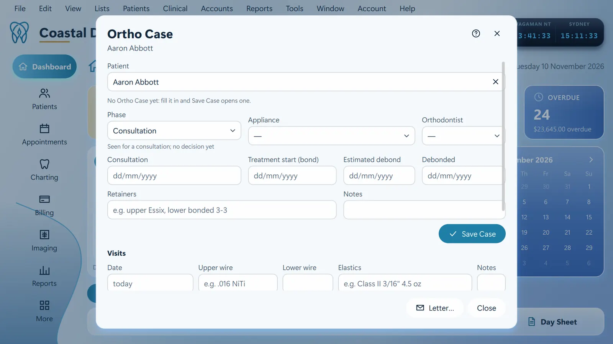
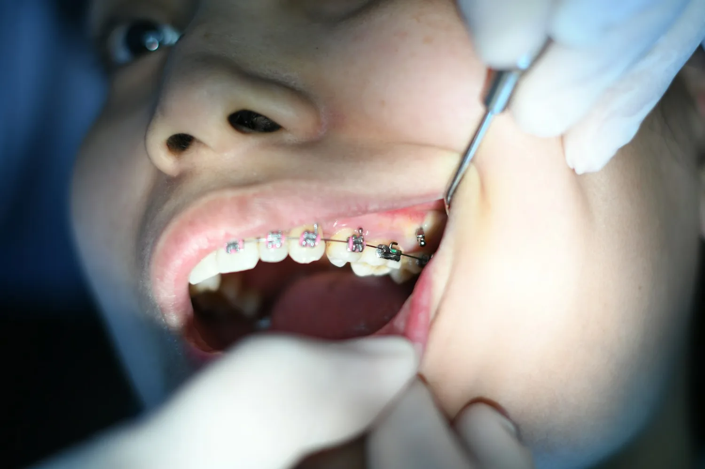
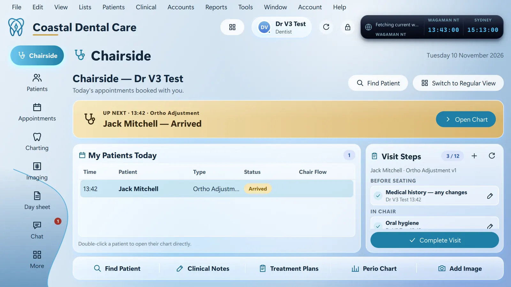
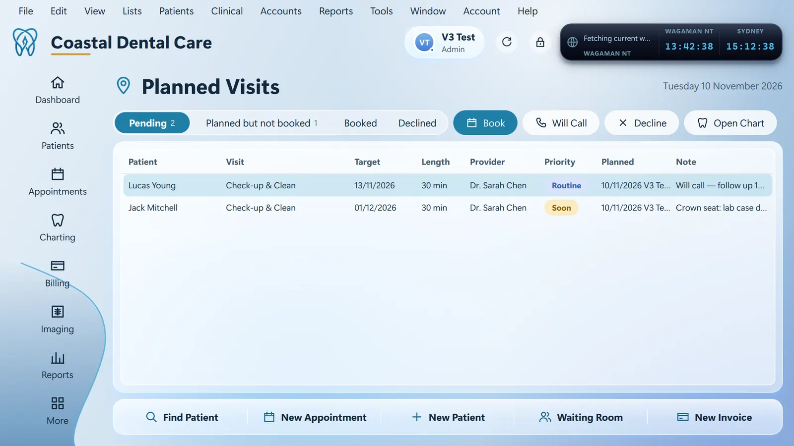
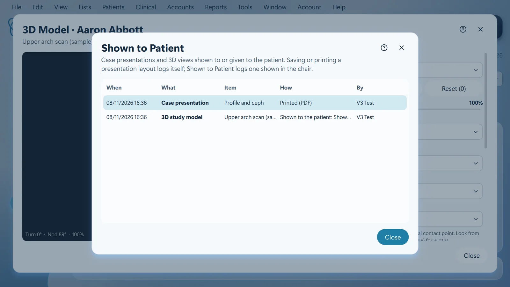

01 / 06 · Active treatment
One case card, consultation to retention
Charting → Ortho Case
The Ortho Case holds everything about the patient's treatment in one place.
- The phase: Consultation, Observation, Active, Debond, Retention or Complete.
- The appliance: metal, ceramic or lingual brackets, clear aligners, a functional appliance, an expander or a removable appliance.
- The consultation and bonding dates, the estimated and actual debond, and months in treatment.
- The retainer, and your notes.
- The orthodontic Dashboard's numbers come from these cards.

02 / 06 · Active treatment
Every adjustment logged
Ortho Case → Add Visit
Each adjustment visit goes on the case card with what was done.
- The wires, the elastics and notes for each visit.
- The visit log reads as the case's history.
- Every entry and change is kept in the audit log.

03 / 06 · Active treatment
Adjustment visits that run to a checklist
Settings → Features → Visit Workflow
Each appointment type can have its own steps, shown beside Chairside, so bond-ups, adjustments and debonds run the same way every time.
- Steps tick themselves when the record is made: a note, images, the next visit planned.
- Quick-entry steps for oral hygiene, archwires and elastics drop their answers into the note.
- Complete Visit is never blocked. It lists what's outstanding, and finishing anyway asks for one reason.

04 / 06 · Active treatment
Book the next adjustment before they leave
Chairside → Plan Next Visit
The orthodontist sets the next visit at the chair, and the front desk books it.
- Choose the type, the interval, the length and a note for reception.
- The Planned Visits page lists today's patients first. Book opens the book at the target week, already filled in.
- A visit not booked by its target shows under “Planned but not booked”, so nobody drops out of treatment unnoticed.

05 / 06 · Active treatment
Debond, retainers and retention reviews
Ortho Case → Phase
Treatment doesn't end at the debond, and neither does DentaCore.
- Move the card to Debond, then Retention, with the actual debond date and the retainer recorded.
- Final Records and Retention Review captures sit under their own stage in the gallery.
- Recalls bring retention patients back for their checks.
- Mark the case Complete when retention is finished.

06 / 06 · Active treatment
A record of what the family was shown
Charts & Report → Shown to Patient
Keep a record of each case presentation and 3D view the patient or parent was shown, and when.
- Log a presentation or 3D view as shown, with a note of what was discussed.
- Saving or printing a presentation logs itself.
- History lists what, when, how and by whom, and each entry is in the audit log too.
